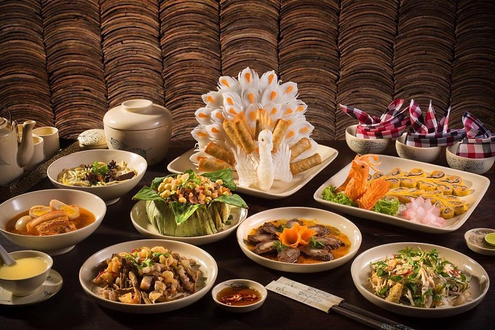

Tản mạn trà đá Hà Nội - Phần 1
Hà Nội là nơi tôn lên văn hoá trà đá nhưng xuất xứ của thức uống bình dị này lại xuất phát từ những tiệm ăn của người Hoa trong miền Nam...
Blogs · Tác giả · Châu Anh - Hương Ly - Ngọc Lê

Tản mạn trà đá Hà Nội - Phần 2
Trà đá luôn mang trong mình một nét đẹp bình dị. Chỉ cần một chiếc bàn gỗ tự chế, vài chiếc ghế dài hay ghế nhựa đơn sơ, mấy cái cốc thủy tinh, vài bao thuốc lá, hộp kẹo, hộp đựng thuốc lào,...
Blogs · Tác giả · Châu Anh - Hương Ly - Ngọc Lê

Huế - Chốn bình yên để "chữa lành" tâm hồn còn xanh
“Huế buồn lắm", một câu nói muôn thuở của những vị khách từng đi du lịch Huế hay thậm chí cả những người còn chưa đặt chân tới vùng đất này...
Blogs · Tác giả · Châu Anh

Lạc Bước Ở “Xứ Sở Thần Tiên” Pu Ta Leng
Pu Ta Leng - cái tên nghe vừa hoang sơ, vừa hùng vĩ ấy luôn thôi thúc trái tim những kẻ đam mê chinh phục. Nằm sừng sững giữa đại ngàn Tây Bắc, "nóc nhà thứ hai" của Việt Nam...
Blogs · Tác giả · Châu Anh

Nha Trang và những hòn ngọc giấu mình: Khám phá thiên đường biển đảo
Nắng vàng rực rỡ, biển xanh ngắt, cát trắng mịn màng - đó là những gì bạn sẽ được trải nghiệm khi đặt chân đến Nha Trang, "hòn ngọc" của biển Đông...
Blogs · Tác giả · Hương Ly

Nền ẩm thực cố đô
Theo sử sách, mỗi bữa ăn của vua Khải Định, Đồng Khánh, Minh Mạng… bắt buộc phải có từ 35 đến 50 món, trong đó có vài món thuộc “bát trân”, tức 8 món ăn quý nhất bao gồm...
Blogs · Tác giả · Ngọc Lê
Hành Trình Khám Phá Cố Đô: Đại Nội Văn Lâu, Nghênh Lương Đình và Những Ngôi Lăng Tẩm Uy Nghi
Có một sự thật thú vị là hai di tích Huế là Đại Nội Văn Lâu-
Nghênh Lương Đình là một trong những biểu tượng nổi tiếng của Huế được đưa vào hình
ảnh trên tờ tiền Việt Nam...
Blogs · Tác giả · Hương Ly

Nha Trang - Điểm hội tụ của những lễ hội
Lễ hội Tháp Bà Ponagar, diễn ra vào tháng 3 âm lịch hàng năm, là một trong những lễ hội lớn nhất của người dân Nha Trang và cũng là Di sản văn hóa phi vật thể Quốc gia...
Blogs · Tác giả · Ngọc Lê

Chân mệnh thiên tử lắm gian lao – Kỳ 3: Chúa Nguyễn Ánh và nước Chân Lạp
Tiếp nối chuỗi bài về hành trình phục vị của chúa Nguyễn Ánh, bên cạnh mối bang giao với Xiêm La, quan hệ giữa chúa Nguyễn và Chân Lạp cũng rất đán...

Chân mệnh thiên tử lắm gian lao – Kỳ 3: Chúa Nguyễn Ánh và nước Chân Lạp
Tiếp nối chuỗi bài về hành trình phục vị của chúa Nguyễn Ánh, bên cạnh mối bang giao với Xiêm La, quan hệ giữa chúa Nguyễn và Chân Lạp cũng rất đán...

Chân mệnh thiên tử lắm gian lao – Kỳ 3: Chúa Nguyễn Ánh và nước Chân Lạp
Tiếp nối chuỗi bài về hành trình phục vị của chúa Nguyễn Ánh, bên cạnh mối bang giao với Xiêm La, quan hệ giữa chúa Nguyễn và Chân Lạp cũng rất đán...